# -*- coding: utf-8 -*- import os import sys import datetime from sikuli import * #XML関連 from xml.etree import ElementTree #クリップボード関連 from java.awt import Toolkit from java.awt.datatransfer import Clipboard from java.awt.datatransfer import DataFlavor # 自作ライブラリインポート myPath = os.path.dirname(getBundlePath()) if not myPath in sys.path: sys.path.append(myPath) # 画像ファイル読み取りのため、自身のディレクトリパスを追加する addImagePath(os.path.dirname(getBundlePath()) + "/GMSDCapture.sikuli") import GMSDLib reload(GMSDLib) from GMSDLib import * import GMSDParams reload(GMSDParams) from GMSDParams import * ###------------- # キャプチャメイン処理 # def main(params): GMSDLib.logger(u"キャプチャ処理開始") #ランドマーク全件分をループさせる for e in params.tree.findall(u'.//target/name'): captureDemo(params, e.text) #終わったら、Excelを保存する saveExcel(params) ###------------- # 指定されたランドマークのキャプチャ処理 # def captureDemo(params, target): GMSDLib.logger(u"個別キャプチャ処理開始 target={0}".format(target)) # ブラウザにフォーカスを当てる GMSDLib.focusBrowser(params) # アドレスバーにフォーカスをあてる type("l", Key.CTRL) # GoogleMapのURLを指定する paste(params.tree.findtext(u'.//browser/mapurl')) type(Key.ENTER) #ブラウザ範囲に限ってマップ画面が開くまで待つ #タイムアウトをparamsの初期化時に短く設定しているので、 #見つかり次第処理が終了し、次に遷移する #見つからなかった場合、FindFailedが発生する #FindFailedをcatchする場合の処理は、GMSDParams参照 #カーソルの点滅のように、多少画像の変化がある場合、 #類似度を若干下げる事で、包括的にマッチさせられる params.browserReg.wait(Pattern().similar(0.80), 30) #検索バーにランドマークを設定する #デフォルトでは画像の真ん中を操作するが、ターゲットオフセットを指定すると #任意の場所にカーソルを合わせることができる params.browserReg.paste(Pattern().similar(0.80).targetOffset(-34,1), target) type(Key.ENTER) #ランドマークの詳細が表示されるまで待つ params.browserReg.wait(Pattern().similar(0.69), 30) #地図部分の描画が完了するまで少し待つ wait(3) #現在の画面のキャプチャを取得する capturePath = captureBrowser(params) GMSDLib.logger("cp={0}".format(capturePath)) #メニューを開く params.browserReg.click() #メニューが開くまで待つ params.browserReg.wait(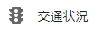, 10) #アニメーションで動く画面の場合、画像がヒットしても #操作しようとした時に動いている可能性があるので、 #開いた後少し待つと安全 wait(2) #メニュー部分のスクロールをするため、メニュー内部にカーソルをのっける #クリックはしないので、hoverのみ params.browserReg.hover() #指定画像が表示されるまで、画面をスクロールする #無限ループを避けるため、上限値を設けておく #ここの動きを確認したい場合、Chromeの縦サイズを小さくして、 #下記画像が初期画面表示時に表示されない状態にしておくとよい。 cnt = 0 while not params.browserReg.exists(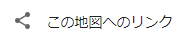, 1) and cnt < 20: # マウスホイールを1段階だけ下に動かす wheel(WHEEL_DOWN, 1) wait(1) # 現在の回数をインクリメント cnt += 1 #見つかったら、リンク画像をクリック params.browserReg.click() #出てきた共有リンク部分のうち、リンクが記載されている #フォーム部分にカーソルを合わせてクリックする params.browserReg.wait(Pattern(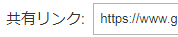).similar(0.80).targetOffset(41,1), 10) wait(2) params.browserReg.click(Pattern().similar(0.80).targetOffset(41,1)) #全選択 type("a", Key.CTRL) wait(1) #コピー type("c", Key.CTRL) wait(1) #この段階で、クリップボードには、共有リンクが保持されている #クリップボードのデータを取得する toolkit = Toolkit.getDefaultToolkit() clipboard = toolkit.getSystemClipboard() contents = clipboard.getContents(None) linkText = contents.getTransferData(DataFlavor.stringFlavor) # エクセルにフォーカスを当てる GMSDLib.focusExcel(params) #エクセルにペーストする paste2Excel(params, target, capturePath, linkText) ###------------- # ランドマーク情報をエクセルに貼り付ける # バージョンによって画面レイアウトが異なるため、分岐させる # Excelは画面全部を使って開かれている可能性があるため、 # Regionでの範囲絞り込みは行わない # def paste2Excel(params, target, capturePath, linkText): #シートを追加して、シート名を変更する if params.excelVersion == GMSDLib.EXCEL_VERSION_2010: #シート追加アイコンを取得し、範囲を取得する sheetAddM = wait(, 10) #範囲をカーソルの移動で確認する hover(sheetAddM.getTopLeft()) hover(sheetAddM.getBottomRight()) #シート追加アイコンを押下する click() #シート追加アイコンから今追加したシート名タブの範囲を取得する #全範囲から検索すると、他のシート名もヒットしてしまうため r = Region(sheetAddM.getTopLeft().getX() - 20, sheetAddM.getTopLeft().getY() - 10, 80, 40) hover(r.getTopLeft()) hover(r.getBottomRight()) #先ほど追加したシート名をダブルクリックする doubleClick(r) wait(1) #ランドマーク名を貼り付ける paste(target) wait(1) #決定する type(Key.ENTER) wait(2) elif params.excelVersion == GMSDLib.EXCEL_VERSION_2013: #シート追加アイコンを取得し、範囲を取得する sheetAddM = wait(, 10) #範囲をカーソルの移動で確認する hover(sheetAddM.getTopLeft()) hover(sheetAddM.getBottomRight()) #シート追加アイコンを押下する click() #シート追加アイコンから今追加したシート名タブの範囲を取得する #全範囲から検索すると、他のシート名もヒットしてしまうため r = Region(sheetAddM.getTopLeft().getX() - 20, sheetAddM.getTopLeft().getY() - 10, 80, 40) hover(r.getTopLeft()) hover(r.getBottomRight()) #先ほど追加したシート名をダブルクリックする doubleClick(r) wait(1) #ランドマーク名を貼り付ける paste(target) wait(1) #決定する type(Key.ENTER) wait(2) elif params.excelVersion == GMSDLib.EXCEL_VERSION_2003: #シート追加ショートカット type(Key.F11, Key.SHIFT) wait(1) if params.osVersion == GMSDLib.WINDOWS_7: #ヘッダからシート名を変更する click(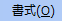) wait(, 10) click() wait(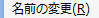, 10) click() if params.osVersion == GMSDLib.WINDOWS_10: #OSのフォントが異なる場合、画像マッチングはうまくいかなくなる #類似度を下げるとマッチする場合もあるが、他のにヒットしてしまう場合もある。 #日本語解析をする、ショートカット、力業等々で対応するしかない… #ヘッダからシート名を変更する click(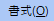) wait(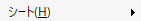, 10) click() wait(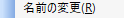, 10) click() #ランドマーク名を貼り付ける paste(target) wait(1) #決定する type(Key.ENTER) wait(2) #選択セルを1つ下げる type(Key.DOWN) wait(1) #リンク文字列を貼り付ける paste(linkText) #貼り付けた時に書式設定のアイコンが出てしまうので、 #ESCで処理キャンセルさせる wait(1) type(Key.ESC) wait(2) #シートの先頭に戻る type(Key.HOME, Key.CTRL) wait(1) #ランドマーク名を張り付ける paste(target) wait(1) #選択セルを3つ下げる type(Key.DOWN) wait(1) type(Key.DOWN) wait(1) type(Key.DOWN) wait(1) #画像を挿入する if params.excelVersion == GMSDLib.EXCEL_VERSION_2010: #挿入タブをクリック click(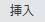) wait(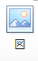, 10) wait(1) #図挿入アイコンをクリック click() #挿入ダイアログを待機 #文字の画像判定は結構曖昧。（多分細かいから） #文字列解析を行わず、文字で判定を行う場合、類似度を99まであげておくと #指定した文字列画像のみのヒットに絞り込める wait(Pattern(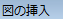).exact(), 20) wait(1) #オフセットを指定して、キャプチャパスを張り付ける paste(Pattern(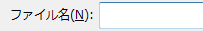).targetOffset(32,0), capturePath) #挿入ボタンクリック click(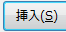) wait(5) type(Key.ESC) elif params.excelVersion == GMSDLib.EXCEL_VERSION_2013: #挿入タブをクリック #ホームタブ内にセルの挿入アイコンがあるため、タブ文字列だけでは判定不可能。 #そういう場合は、周りをまきこんで判定を絞り、オフセットで必要部分を押下する click(Pattern(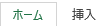).targetOffset(28,1)) wait(, 10) wait(1) #図挿入アイコンをクリック click() #挿入ダイアログを待機 wait(Pattern().targetOffset(32,0), 20) wait(1) #オフセットを指定して、キャプチャパスを張り付ける paste(Pattern().targetOffset(32,0), capturePath) #挿入ボタンクリック click() wait(5) type(Key.ESC) elif params.excelVersion == GMSDLib.EXCEL_VERSION_2003: #挿入ヘッダをクリック click(Pattern(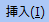).similar(0.69)) if params.osVersion == GMSDLib.WINDOWS_7: wait(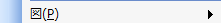, 10) click() elif params.osVersion == GMSDLib.WINDOWS_10: wait(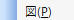, 10) click() wait(, 10) click() #挿入ダイアログを待機 wait(Pattern(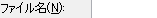).targetOffset(42,-2), 20) wait(1) #オフセットを指定して、キャプチャパスを張り付ける paste(Pattern().targetOffset(42,-2), capturePath) wait(1) #挿入ボタンクリック click(Pattern().similar(0.71)) wait(5) type(Key.ESC) def saveExcel(params): wait(2) #保存ショートカットキー type("s", Key.CTRL) wait(2) if params.excelVersion == GMSDLib.EXCEL_VERSION_2013: #2013はワンクッションはさむ wait(Pattern().similar(0.80), 10) click(Pattern().similar(0.80)) #エクセルの保存先を取得する excelDirPath = params.tree.findtext(u'.//excel/path', None) #エクセルファイルの画像名を、日時に合わせて修正する #拡張子はつけない excelPath = u"{0}{1}{2:%Y%m%d-%H%M%S}".format(excelDirPath, os.sep, datetime.datetime.now()) GMSDLib.logger(u"excelPath={0}".format(excelPath)) if params.excelVersion == GMSDLib.EXCEL_VERSION_2010: wait(3) elif params.excelVersion == GMSDLib.EXCEL_VERSION_2013: wait(Pattern(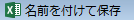).exact(), 10) elif params.excelVersion == GMSDLib.EXCEL_VERSION_2003: # フォントや色によって画像マッチングがうまくいかない場合は分岐させる if params.osVersion == GMSDLib.WINDOWS_7: wait(Pattern(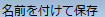).exact(), 10) elif params.osVersion == GMSDLib.WINDOWS_10: wait(Pattern(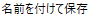).exact(), 10) #初期状態でパス入力欄にカーソルが当たっているはずなので、そのままペースト paste(excelPath) wait(1) #保存実行 type(Key.ENTER) wait(1)